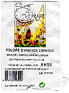

|
Mandelmel
Mandelmel til salg via dansk website
16. september 2008
Så er Mandlen.dk endelig på banen.
Som nogle af jer allerede ved, startede projekt ”mandelmel” med at jeg oplevede en intolerance for glutenholdige produkter.
Efter lidt søgen på nettet, blev jeg klar over at mandelmel var et rigtigt godt alternativ. Og jeg havde naturligvis en forventning om, at det kunne købes i min nærmeste Helsekostbutik. Men selv efter megen søgen – også på nettet – opdagede jeg, at det var umuligt at opdrive mandelmel i Danmark.
Og så var gode råd jo dyre!
Heldigvis kunne min mand fortælle mig, at mandelmel er meget almindelig brugt i Frankrig og at især Jean Herves produkter er rigtig gode.
Så vi drog til Frankrig i sommer, havde et møde med Herve og mandlen.dk var en realitet.
Vi har valgt at starte med tre produkter, nemlig mandelmel, mandler og mandelpure. Alt er af bedste kvalitet og naturligvis økologisk.
Der er mulighed for at købe på nettet www.mandlen.dk og afhente produkterne her hos os på Fyn eller få dem sendt med Post Danmark til deres takster.
Vi lægger løbende opskrifter med mandelmel ind på vores hjemmeside – lige nu kan du få opskrifter på vores mandelkage, mandelbrød og ikke mindst marzipan – både med og uden sukker. Mandelisopskrift er ved at blive prøvet af og lægges på siden så snart, den er klar!
Du er altid velkommen til at sende os en mail, hvis du har spørgsmål!
Mange sensommerhilsner
Anete Bühring
Økologisk mandelmel i kilovis
5. april, 2002 (med opdatering per 10. august 2007)

Jeg bestiller ti kilo økologisk mandelmel ad gangen fra et mandelmelsfirma i
Nordfrankrig, som importerer det fra Spanien. (Tryk på billedet, hvis du
vil se nærmere på mærkatet fra posen.)
Holdbarhedsgarantien løber fra 6 til 12 måneder frem.
Man kan sagtens lægge det i fryseren, hvis man er bekymret for
holdbarheden. Så kan det holde i flere år. Jeg bruger selv
60-70 gram pr person om dagen i min madlavning,
hvilket vil sige godt et-to kilo på en måned.
Prisen for 10 kilo er 815 FF, plus 180 FF for fragt, i alt 995 FF,
svarende til godt 1.200 kroner. Det giver en kilopris på 120 kroner.
(Opdatering august 2007: Prisen er nu steget til 1.342 kroner inklusiv omveksling og bankoverførsel, svarende til en kilopris på 135 kroner. Prisen svinger noget – i 2005 var deres kilopris en periode helt oppe på 180 kroner)
Til sammenligning koster 1 kilo økologiske mandler i danske butikker mellem 200 og 220 kroner
pr. kilo. Dertil kommer arbejdet med at pille dem og male dem til mel.
Ikke-økologiske mandler
(for eksempel i Netto eller Fakta) koster kun 80 kr kiloet, men så er de også både sprøjtede og badet i kemikalier (en kemisk metode til at få skallerne af). Ikke anbefalelsesværdigt, hvis du spiser mange af dem!
Også i Tyskland kan man købe ikke-økologisk mandelmel i poser af 100 gram (i almindelige supermarkeder) til en pris af kun 62 kr pr kilo.
(Opdatering november 2005: Se nedenfor med hensyn til mandelmel i Jylland)
Mik
Mandelmelet kan bestilles hos:
S.A. J.L. Boyere
Vijaya
B.P. 60
53500 Ernee
Frankrig
Tel: (+33) 2 43 02 77 77
Fax: (+33) 2 43 02 66 30
NB: De sender ikke noget, før de har modtaget din betaling (check eller netbank), og de taler ikke engelsk. De kan heller ikke tage imod VISA-betaling

Om mandelpasta:
Mandelpasta er ristede mandler, som er moset til en slags "nøddesmør", nøjagtigt efter samme princip som man laver peanutbutter. En uundværlig ingrediens i frugtsalat. Blot en enkelt skefuld (rørt godt ud) giver hele frugtsalaten en meget unik smag, man kan blive helt afhængig af.
I Frankrig koster 700 gram økologisk mandelpasta godt 80 kroner.
Herhjemme er det en del dyrere. Men det er alle pengene værd, efter min mening.
En frugtsalat uden mandelpasta er ingenting.
Man kan købe det i små glas i helseforretningerne - ihvertfald i Kbh. Prisen er cirka 70 kroner for et glas.
I Frankrig producerer firmaet Herve (www.herve-sarl.fr) en stribe fremragende nødde- og mandelmelprodukter (i glas). Gå eksempelvis ind i en helsebutik og spørg efter "Puree Anmandes Completes (Mandelmus)", næste gang du besøger Frankrig. (Email: jean@herve-sarl.fr). Du kan også bestille dem over nettet, i så fald sælges de i seks glas ad gangen.
----- Original Message -----
Monday, 14 November 2005 8:53:59 PM
From: louise.volsing[snabela]tele2adsl.dk
Subject: mandelmel
To: mik aidt
Vedrørende mandelmel (økologisk). Det kan købes i Gårdbutikken som er en økologisk købmand med butikker i Holstebro, Viborg og Århus. Det koster 260-270 kr. pr kg. hvis man bestiller 10 kg. Man kan også få mindre men, så kender jeg ikke prisen, det er noget med fragt og lager og sårn. Men hvis der er flere som skal ha’ så bliver det i hvert fald billigere. Man skal snakke med Jacob, han ved hvad mandelmel er for noget.
Det er frisk og velsmagende mel. Jeg vil gerne anbefale det.
Hvis man er til øko-mad så kan jeg også anbefale deres kødprodukter i hvert fald dem fra Holstebro. Slagteren her laver for resten frankfurtere og spegepølser uden mel og andre ‘ulovlige’ stoffer.
Tjek hjemmesiden: www.gaardbutikken.com
Nå det var det …
Venlig hilsen Louise Volsing
Subject: [scd-dk] mandelmel
Date: Fri, 12 Apr 2002 16:17:50 +0200
scd-dk@yahoogroups.com writes:
Hej !
Er der nogen, der vil være med til at købe en ordentlig portion mandelmel i Frankrig hos http://www.herve-sarl.fr , så vi kan deles om fragtudgiften?
Jeg har adressen fra Mik. Melet er økologisk.
Send mail en mail, så finder vi ud af den videre distribution. Jeg holder til i Sønderjylland.
God weekend til alle
Hanne
Hej Hanne,
Jeg var faktisk ikke engang klar over at Herve-Sarl også sælger mandelmel.
Jeg har i snart en del år købt mandelmel i Frankrig hos Vijaya, og kan varmt anbefale kvaliteten af deres vare.
For lige at summere op:
- - -
1) Mandelmel køber jeg økologisk i 10-kilos sække hos:
Vijaya
J.L.Boyere
BP 60
53500 Ernée
Frankrig
tlf 0033 2 43 02 77 77
Det hedder "Amande Poudre Esp.Bio 10 Kilo"
Sidste gang jeg bestilte betalte jeg 151,88 euro for 10 kilo, inklusiv fragt (som udgjorde cirka 190 kr), svarende til ialt 1.197 kroner.
- - -
2) Mandelpasta (ristet mandelmasse, svarende til peanutbutter, men altså med mandler i stedet for peanuts) - og en uundværlig ingrediens i frugtsalat - køber jeg økologisk i 6 glas ad gangen med 700 gr i hver hos:
Jean Hervé
Rue de la Republique
36700 Clion Sur Indre
Frankrig
Tlf 0033 254 38 66 03
Fax 0033 254 38 66 04
Sidste gang jeg bestilte betalte jeg 124,80 euro for 12 glas, inklusiv fragt, svarende til 936 kroner.
Det er til op imod et års forbrug.
---
Begge steder taler ret dårligt engelsk, så det er en klar fordel hvis man kan kommunikere på fransk.
Selvom Jean Hervé har website og det hele er de ikke ret gode til at behandle emails. Fax forstår de bedre. Telefon allerbedst.
KH Mik
Mandelmel
Thu, 19 Nov 1998 7:26:14 GMT
Kære Mik,
Tak for rigtig god hjemmeside med masser af oplysninger. Jeg fandt den efter at have læst Bryd den onde cyklus.
I INCO kan man købe mandelmel til 120,00 pr. kilo excl. moms, men man skal være momsregisteret for at handle der.
Jeg har ikke prøvet om man kan få det i METRO.
Dit tilbud er meget bedre, idet det du kan skaffe, er økologisk og samtidig billigere. Jeg vil derfor gerne bestille. Hvor meget skal man aftage af gangen og hvor længe er leveringstiden samt hvor lang tid kan det holde sig i fryseren?
Venlig hilsen
Dorthe Kondrup
Re: Mandelmel
Sat, 21 Nov 1998 13:34:42 GMT
>I INCO kan man k|be mandelmel til 120,00 pr.
>kilo excl. moms, men man skal v{re
>momsregisteret for at handle der.
Interessant!
Det vidste jeg ikke.
>Jeg har ikke pr|vet om man kan f} det i METRO.
Det kan man ikke. Kun mandelflager. (Dér har jeg været)
>Dit tilbud er meget bedre, idet det du kan skaffe, er
>|kologisk og samtidig
>billigere. Jeg vil derfor gerne bestille. Hvor meget
>skal man aftage af gangen
Well. Efterhånden som jeg begyndte at få flere og flere bestillinger, besluttede jeg at indstille "forretningen".
Jeg har ikke tænkt mig at gøre karriere som "mandelmelssælger" og jeg har ingen interesse i at rage uklar med Told- og Skat på et eller andet tidspunkt.
Så nu opfordrer jeg - på websiden om mandelmel - bare folk til selv at bestille. Problemet for mange er at minimumindkøbet er 10 kilo. Men jeg kan sætte dig i kontakt med andre, som også ønsker at bestille, og så kan I jo selv fordele de 10 kilo imellem jer.
Jeg spiser selv masser af det - i gennemsnit et par kilo pr måned. Bruger det til såvel brød, kager, drys på yoghurten, smører auberginer og fisk ind i det før jeg steger dem, og så videre. Det er superlækkert at lave mad med!
>samt hvor lang tid
>kan det holde sig i fryseren?
Det kan holde sig i månedsvis uden at være på køl. I mindst 6-8 måneder i køleskab. Og sikkert i flere år, hvis man fryser det ned.
KH Mik
Mandelmel
25. juli 2000 20:46:18
Jeg har en svoger der jævnligt kører gennem Flensborg. Han har i nogen tid købt mandelmel i "REAL", Schleswiger str. 130 - i poser med 200 g for en bagatel af 1,29 DM.
Derfor får jeg mit daglige brød bagt af mandelmel - meget lækkert, en mellemting mellem kage og brød, kan udmærket spises med pålæg - det lidt vi nu må få. Ja, egentligt er det jo marcipanbrød.
Jeg har indtil nu klaret kuren i 1,5 år og har det fantastisk - uden nogen medicin.
Mvh
Peter Sonne
peter@gcl.dk
Mandelmel i handelen i Danmark
21. februar 2000
Engrosfirmaet Strøm & Svendsen (tlf 32 95 15 05) sælger mandelmel til restauranter og specialkøbmænd. Derfor kan man blandt andet købe mandelmel i CityArkaden (i Pilestræde) i Københavns centrum. Det sælges i 1-kilo poser til kr 175,00.
(Oplysning indtelefoneret af Annelise Jørgensen)
Date: Sun, 14 Apr 2002 10:42:08 +0200
Hej Alle.
Jeg køber selv mit mandelmel i Flensborg. I Flensborg nord ligger der et kæmpestort indkøbscenter, som hedder Förde Park, og der ligger der et stort supermarked ved navn REAL. De har mandelmel, både af mandler med og uden 'skind' + andet nøddemel, f.eks. af hasselnødder. De sælger det i små poser med 200g. Det er dog ikke økologisk, skal jeg huske at sige.
Hilsen fra Lene
Mandelen
Der findes to slags mandler: den søde og den bitre mandel.
Den bitre mandel indholder et glykosid, som enzymet emulsin spalter til den giftige blåsyre. Derfor hold dig fra bitre mandler.
Den søde mandel, som er den type mandel, du almindeligvis køber i handelen, indeholder praktisk talt alle de livsnødvendige aminosyrer, som vores krop har brug for. Deriblandt tryptophan og cystin, som ikke i så stor udstrækning findes i andre plantenæringsmidler. Derfor er mandelen et meget fint næringstilskud for vegetarer.
Mandelen indeholder relativt mange af enzymerne phospatase og amygdalase, der er vigtige ved fordøjelsen.
Mandelen er meget fedtrig, men mandelolien har en meget fin kvalitet: den indholder kun mellem 1-5 procent mættede fedtsyrer (dem man skal undgå) og mindst 95 procent af de flerumættede.
Dette forhold forskubbes i ugunstig retning i den mandelolie, man kan købe i handelen, så derfor er det bedst at spise mandlerne som de er.
Kulhydratindholdet er påfaldende ringe; da en fjerdedel er pentose er mandelen særlig velegnet for diabetikere og folk på en kulhydragfattig diæt som SCD.
På grund af sit ringe fiberindhold bliver selv en meget ømfindtlig tarm ikke belastet af dette næringsmiddel.
Mandelen har et højt indhold af kalium og kalcium - og et lavt indhold af natrium og klor.
Forholdet mellem jern og kobber ligger meget nær det fysiologiske forhold (mandelen 30:1, blod 25:1). Jern og kobber er vigtige stoffer for bloddannelsen. Både af denne grund og også på grund af det fine manganindhold er mandelen værdifuld ved blodmangel.
Men selvom mandelen indeholder mange sunde stoffer og har lægende virkning, er det ikke tilrådeligt at spise mere end 60 gram mandler om dagen; det svarer til en håndfuld om dagen. Al overdrivelse frarådes.
Næringsindholdet af 60 gram søde mandler:
Protein 11,2 gram
Fedt 32,5 gram
Kulhydrater 11,8 gram
Vand 2,8 gram
Plantefibre 1,6 gram
Kalium 414 mg
Kalcium 152,4 mg
Natrium 1,8 mg
Klor 1,2 mg
Jern 2,6 mg
Kilde: "Det Grønne Køkken"
Dansk startside
Engelsk startside
|